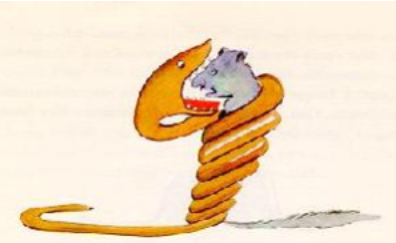

The Snake
Is it possible to come across any snake in literature and not think of that snake? You
know, the one in the Bible and Paradise Lost—the one that’s actually Satan.
From all of this, it’s hard to know when, in literature, you can or should trust a snake.
In The Little Prince, the narrator certainly doesn’t trust the snake. He doesn’t want it
anywhere near the prince.
But the prince sees the snake differently. He isn’t afraid of it, and converses with it
as if it were just another one of the creatures he meets on his travels. And the snake,
too, seems to treat the prince with respect. It’s the snake who tells the prince, “This
is the Earth; this is Africa” (17.7) when the prince wants to know which planet he is on.
And when the prince points to the sky, to his own planet, the snake remarks that it is
“beautiful” (17.12). Nothing overtly evil about the snake as yet—in fact, he seems to be
quite a chatty fellow, and wise, too. When the prince remarks, “It is a little lonely in
the desert…” (17.16), the snake replies that it “is also lonely among men” (17.17).
